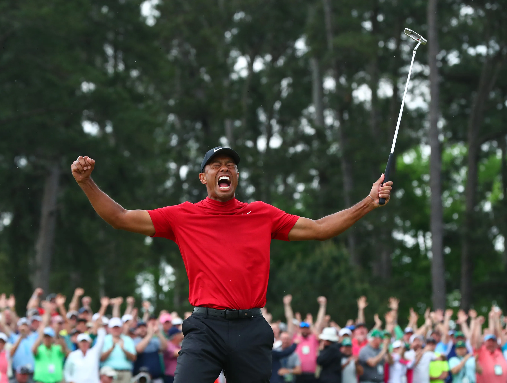

Sports are more than just games; they embody the essence of human experience and serve as a powerful force for unity, inspiration, and personal growth. From the euphoria of victory to the resilience in defeat, sports encapsulate the myriad facets of life, making them the greatest thing in the world.
Sports serve as a powerful source of inspiration and aspiration, igniting dreams and fueling ambitions. Athletes' stories of perseverance, dedication, and triumph against the odds inspire millions around the globe to pursue their passions relentlessly. From the underdog defying expectations to the champion overcoming adversity, sports narratives resonate deeply with individuals seeking to overcome their own challenges and achieve greatness.
Sports are the best thing to happen to competition, but what are the top 5 best sports to watch in order?
Basketball
Professional Fighting
UFC
Boxing
Wrestling
Golf - especially on Sunday
College Football
E-Sports - Yes this is a professional sport!
Now that we have determined that sports are the greatest thing, and the order of which sports are the most fun to watch, we have to determine who the GOAT is. That might leave you wondering, who's the GOAT in sports? Easy. nobody tops this man

Tiger is the greatest player to ever play their individual sport. To comprehend Tiger's greatness, one must first acknowledge his unrivaled achievements. His 82 PGA Tour victories stand as a testament to his remarkable consistency and sheer dominance over two decades. Among these triumphs are 15 major championships, second only to the legendary Jack Nicklaus. Tiger's conquests include four Masters titles, three U.S. Opens, three Open Championships, and five PGA Championships. His relentless pursuit of excellence led him to complete the career Grand Slam at the age of 24, a feat unmatched in the annals of golf history.
One of Tiger's most awe-inspiring records is his unprecedented reign atop the Official World Golf Rankings. For a staggering 683 weeks, he held the coveted position, showcasing his unparalleled prowess and mental fortitude. This remarkable feat underscores his ability to maintain peak performance over an extended period, a testament to his unparalleled dedication and work ethic.
Tiger's biggest moment
Tiger had a lot of big moments in golf, one of his biggest moments came when he was in a tough position off the green with what seemed like an impossible shot. He confidently stepped up to the ball, swung, and well.. you can watch the rest for yourself.
Just for kicks and giggles, here is an interactive chart on top golfers ever